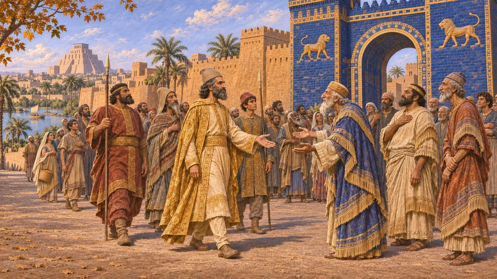
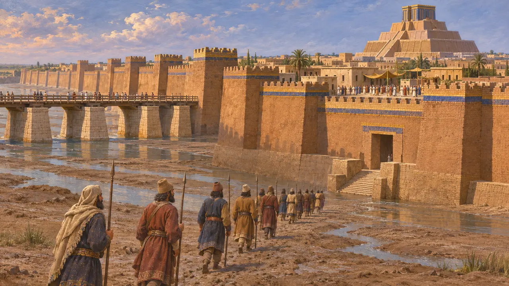
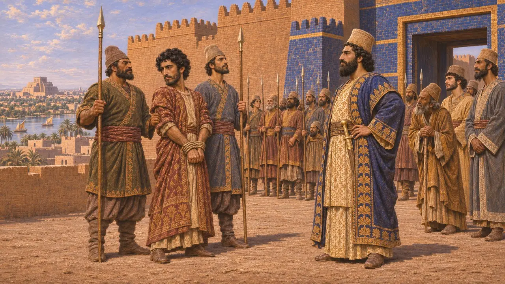
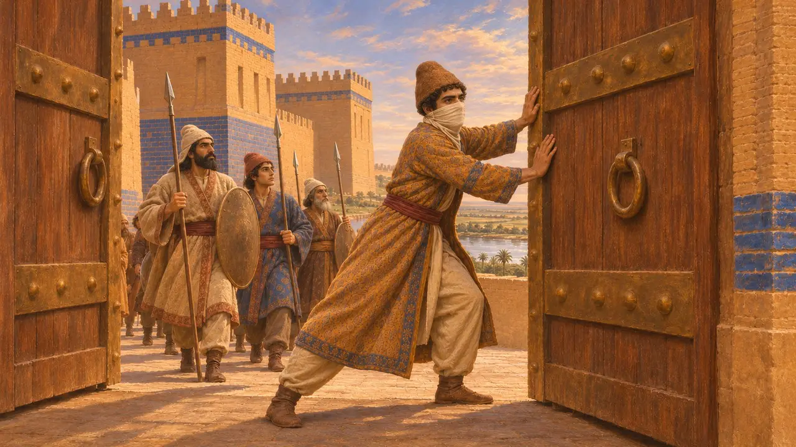
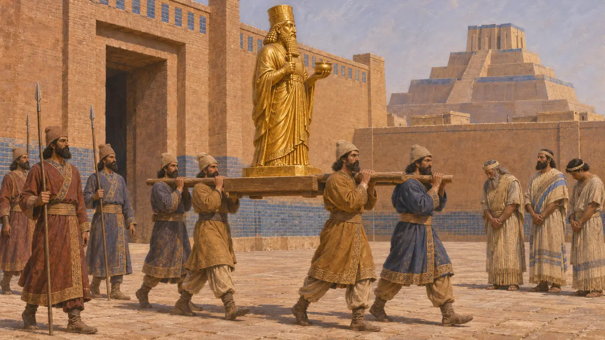

Babil
Fırat kıyısında büyük kent; MÖ 539'da Kyros tarafından alındı, Dareios döneminde isyanların merkezi oldu
Oyunda: Bölüm 1: Kurucunun Mezarı, Bölüm 2: Mızrak Taşıyıcı, Bölüm 3: Yalan, Bölüm 5: Ferman
Babil, Mezopotamya'nın en büyük ve en zengin kenti, son Babil krallarının da başkentiydi. Kyros 539'da kenti aldı; Babil imparatorluğun kraliyet kentlerinden ve başlıca vergi kaynaklarından biri oldu. 522-521'de iki kez, her biri kentin son yerli kralının oğlu Nabukadnezar olduğunu öne süren adamların önderliğinde Dareios'a karşı ayaklandı.
Oyunda: Babil oyunun bölümlerinden biri değildir. Yalnızca Kronik'te geçer; Kronik, Kyros'un kenti 539'da ele geçirişini ve Dareios döneminde kendine Nabukadnezar diyen iki asiyi kaydeder.

Kyros kente giriyor
BelgelerdeNabonidus Kroniği'ne göre Kyros, 539 sonbaharında Dicle kıyısındaki Opis'te Babil ordusunu yendi, ardından Sippar'ı savaşmadan aldı. Komutanı Ugbaru iki gün sonra yine savaşmadan Babil'e girdi; Kyros'un kendisi de iki haftayı biraz aşkın bir süre sonra geldi. Yeni kral için yazılan Kyros Silindiri, tanrı Marduk'un Nabonidus'un yerine Kyros'u seçtiğini ve Kyros'un yerinden edilmiş tanrıları tapınaklarına geri götürdüğünü ileri sürer.
Nabonidus Chronicle (Grayson, Chronicle 7); Cyrus Cylinder

Herodotos surları ve nehri anlatır
Antik anlatıHerodotos, Babil'in devasa surlarını, Fırat üzerindeki köprüsünü ve Bel tapınağını anlatır. Kyros'un nehrin yönünü değiştirip askerlerini kurumuş yatak boyunca gönderdiğini, böylece şehrin merkezindeki halk hâlâ bir bayramı kutlarken kentin düştüğünü söyler. Babil kroniği ise hiçbir kuşatmadan ya da nehir hilesinden söz etmez, yalnızca savaşsız bir girişi kaydeder; bu yüzden onun anlatımı muhtemelen sonraki dönemin hikâye anlatıcılığıyla biçimlenmiştir.
Herodotus 1.178-191

İki asi Nabukadnezar
BelgelerdeDareios'un anlattığına göre 522'de Nidintu-Bel, kendini Nabonidus oğlu Nabukadnezar diye tanıtarak Babil'i ele geçirdi. Dareios onu Dicle'de ve Fırat kıyısındaki Zazana'da yendi ve Babil'de idam ettirdi. 521'de Armenialı Araha aynı iddiayla ortaya çıktı. Dareios'un komutanı Vindafarna (İntaphernes) onu yakaladı; Araha Babil'de kazığa oturtuldu.
DB §16-20; DB §49-50

Zopyros ve uzun kuşatma
Geç dönem efsanesiHerodotos, Dareios'un yaklaşık yirmi ay kuşattığı tek bir Babil isyanından söz eder. Zopyros adlı bir soylu kendi burnunu ve kulaklarını kesti, Dareios'un kurbanıymış gibi Babillilerin yanına geçti, güvenlerini kazandı ve kapıları açtı. Öykü sadakat üzerine ahlaki bir anlatıdır ve Dareios'un kendi kaydındaki iki ayrı isyanla örtüşmez.
Herodotus 3.150-160

Kserkses ve 484 isyanları
TartışmalıBabil tabletleri, Kserkses'in ikinci yılında, yaklaşık 484'te, iki asi kralın daha adını verir: Bel-şimanni ve Şamaş-eriba. Kuzey Babilonya'daki pek çok aile arşivi bu dönemde sona erer. Herodotos, Kserkses'in Bel tapınağından altın bir heykeli götürdüğünü, Arrianos ise Kserkses'in tapınağı yıktığını söyler. Tarihçiler misillemelerin ne kadar sert olduğunu hâlâ tartışır; Kserkses'in büyük tapınağı yerle bir ettiği yönündeki eski görüş bugün geniş ölçüde kuşkuyla karşılanmaktadır.
Herodotus 1.183; Arrian, Anabasis 7.17; C. Waerzeggers, The Babylonian Revolts against Xerxes and the End of Archives, 2003/2004
Kaynaklar
- Nabonidus Chronicle (A. K. Grayson, Assyrian and Babylonian Chronicles, 1975)
- Darius, Behistun inscription (DB)
- Herodotus, Histories 1.178-191, 3.150-160
- A. Kuhrt, The Persian Empire: A Corpus of Sources, 2007
- P. Briant, From Cyrus to Alexander, 2002
- C. Waerzeggers, The Babylonian Revolts against Xerxes and the End of Archives, 2003/2004